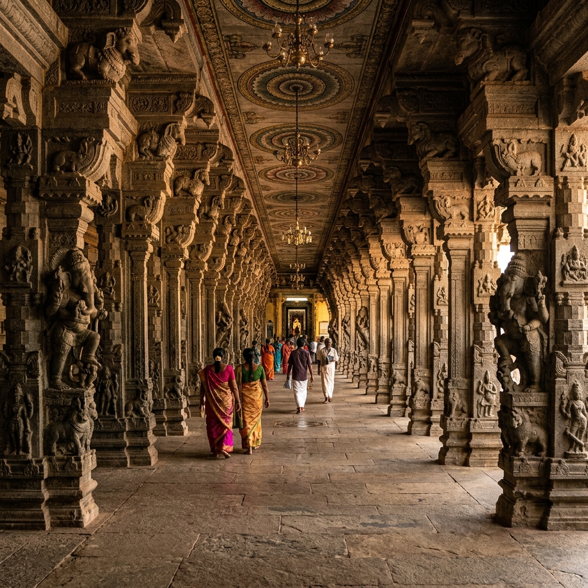

Puri Jagannath Temple
Puri, Odisha
The Sacred Legacy

The Jagannath Temple in Puri is one of India's four sacred Char Dham pilgrimage sites and one of the greatest Vaishnavite shrines in the world. Built by King Anantavarman Chodaganga Deva in the 12th century, this colossal temple with its 65-metre Shikhara dominates the Puri skyline and is visible from miles at sea. Lord Jagannath the Lord of the Universe is a form of Lord Vishnu/Krishna who is worshipped here in an iconic abstract form: a large round face with wide eyes and no limbs, carved from sacred neem wood.
The temple is remarkable for multiple inexplicable phenomena the flag on the Shikhara always flies against the direction of the wind; no sound of the ocean can be heard inside the temple complex despite Puri being a coastal city; the shadow of the main spire is never cast on the ground at any time of day. Scientists have been unable to explain these phenomena. The temple also runs the world's largest free kitchen (Mahaprasad) feeding over 10,000 pilgrims daily with sacred food cooked in 752 clay pots using an ancient wood-fire system.
Sacred Architecture
The temple complex covers 4 acres with 4 high compound walls and 4 gates facing the four cardinal directions. The Kalinga-style architecture features the main Deul (tower) at 65 metres, the Jagamohana (audience hall), Natamandira (dancing hall), and Bhogamandapa (offering hall). 36 hereditary servitor families numbering over 6,000 individuals perform the temple's 56 kinds of daily service (Chappan Bhog).
Rath Yatra
The Rath Yatra the Chariot Festival of Lord Jagannath is one of the world's largest religious gatherings, drawing over 1 million pilgrims annually. The three deities travel from the Jagannath Temple to the Gundicha Temple (their maternal aunt's home) on three massive hand-crafted wooden chariots pulled by thousands of devotees. The word "Juggernaut" entered the English language from this extraordinary procession.
The Divine Kitchen
The temple kitchen (Kotha Bhoga) is the world's largest religious kitchen, processing over 56 dishes daily in 752 clay pots stacked up to 9 layers high over wood fires. Remarkably, the top pot always cooks first defying conventional physics. The Mahaprasad (sacred food) is considered so holy that it can be consumed by people of all castes, even from the same plate historically a revolutionary act of social equality in caste-conscious India.
The Nabakalebar
Every 8, 12, or 19 years (when Ashadha month occurs twice in the lunar calendar), the wooden idols of all three deities are ritually replaced through the sacred Nabakalebar ceremony. Priests of the Daita caste blindfold themselves and the idol, and carve the new idols from specific neem trees identified by divine signs. The transfer of the divine life essence (Brahma Padartha) from old to new idols is performed in complete darkness by a single priest who touches the sacred substance without seeing it.
He needs no limbs because he has no boundaries. He needs no fine features because he transcends all form. Jagannath is the universe itself, looking at you with eyes wide as the horizon, embracing you in his formless love. Odishan Devotional Verse
How to Reach
Bhubaneswar Airport 0 km
Flights from all major cities
Puri Railway Station 0 km
Direct from Delhi, Mumbai, Kolkata
From Bhubaneswar (0 km), Cuttack (0 km)
Excellent Odisha State bus connectivity
October to April
Rath Yatra June/July (peak)